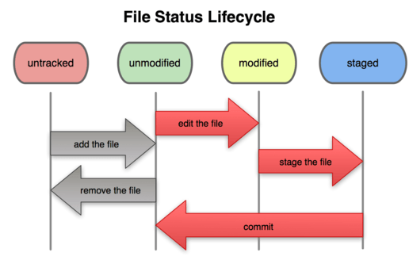

Git é um sistema de controle de versões distribuído, usado principalmente no desenvolvimento de software, mas pode ser usado para registrar o histórico de edições de qualquer tipo de arquivo.
Os arquivos no Git sempre se encontram em algum estado: untracked, unmodified, modified e stage. Entender esses estados nos ajuda a saber melhor qual o momento certo de usar cada comando.

Arquivos marcados como untracked são arquivos não monitorados pelo Git. Os arquivos que acabaram de ser criados sempre estarão com esse estado.
$ touch arq01
$ git status arq01
Arquivos não monitorados: (utilize git add <arquivo> para incluir o que será submetido)
Para que o Git comece a versionar o arquivo precisamos mudá-lo para stage. Note que o Git sempre vai te dar a dica do que fazer quando executar o git status.
Os arquivos marcados como stage são os arquivos novos ou modificados que serão salvos no próximo commit. O que o comando anterior git add faz é adicionar os arquivos de untracked e modified para stage.
Precisamos agora dar o comando git commit para salvar a nova versão do repositório:
$ git commit -a -m ‘Meu primeiro commit’
Quando realizamos um commit, os arquivos saem de stage para unmodified, isso significa que, na linha do tempo, seu arquivo está igual ao estado salvo no último commit.
No commit, salvamos o estado do repositório e o Git passa a informar das mudanças do último commit (HEAD) em diante.
Modified - São os arquivos já monitorados pelo Git que sofreram alguma alteração desde o último commit.